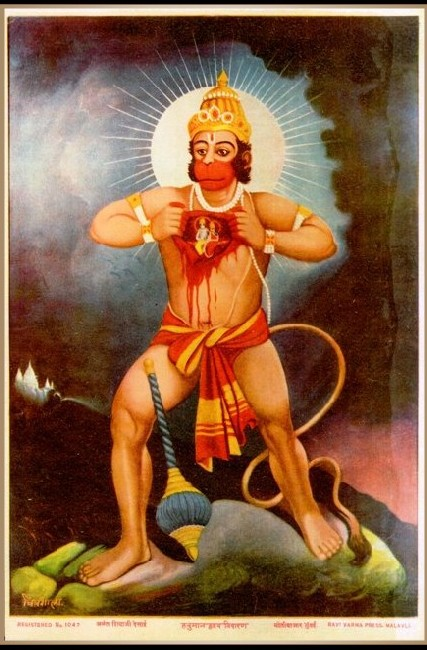
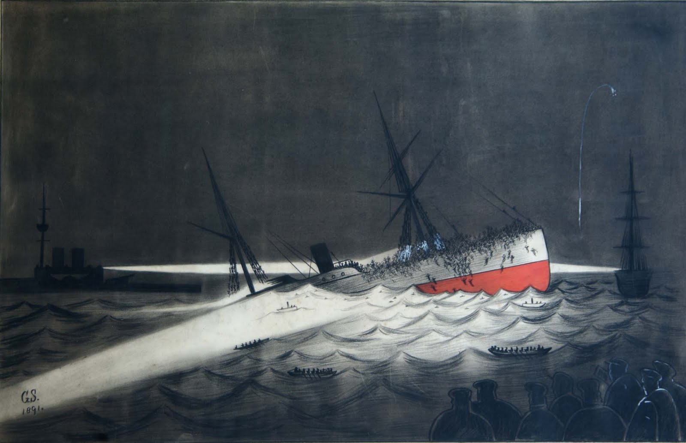
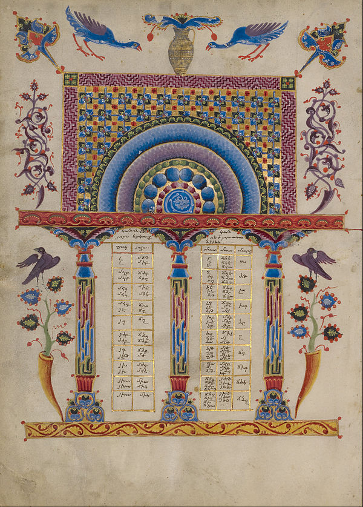

Welcome to Wikipedia,
the free encyclopedia that anyone can edit.
5,106,767 articles in English
- Arts
- Biography
- Geography
- History
- Mathematics
- Science
- Society
- Technology
- All Portals
From today's featured article

Final Fantasy Type-0 is a Japanese video game produced by Square Enix in 2011 for the PlayStation Portable (PSP). It is an action role-playing game where players take the role of Class Zero, a group of fourteen students skilled in magic who are recruited by their superiors into a war between the four nations of Orience. The players also engage in large-scale strategy-based battles on the world map, and have access to a multiplayer option during story missions and side quests. Developed by the same staff as Crisis Core: Final Fantasy VII, Type-0 was designed as a departure from the traditions of the Final Fantasy series with its action-based gameplay and dark storyline. It was originally planned for both PSP and mobile, but the mobile version was cancelled in 2008. The game met with commercial success in Japan, and favorable reviews both in Japan and overseas. Plans for international versions were halted due to the flagging PSP market in the Western world. The first non-Japanese version of Type-0 was a fan translation into English in 2014. A high-definition remaster was released worldwide in 2015. (Full article...)
Did you know...
- ... that the Rama Rahasya Upanishad (Rama in the heart of Hanuman pictured) presents a goddess as the cause of creation, a god as the soul, and both together as the source of all existence?
- ... that Finis Alonzo Crutchfield, Jr. is credited with bringing the televangelist Oral Roberts into the United Methodist Church in 1968?
- ... that Operation Phalat was a preventative strike into Laos by Thai forces in 1971 to contain communist influence in the region?
- ... that for his ordination, Georg Weissel wrote the text of the hymn "Such, wer da will, ein ander Ziel" to his friend's melody for a wedding song?
- ... that Moisés Félix Dagdug Lützow, owner of a radio station, served as the Secretary of the Radio, Television and Film Committee of the Mexican Chamber of Deputies?
- ... that the Kankakee mallow is known from a single 700 m (0.4 mi) long island in the state of Illinois?
- ... that Frank Sprogell said being a golf pro is not really a job?
- ... that Strugnell's Haiku outline cherry blossoms, hair loss, and pub opening times?
Recently improved articles. Start a new article. Nominate an article
In the News

- Andrew Wiles wins the 2016 Abel Prize for his proof of Fermat's Last Theorem.
- An explosion in Ankara, Turkey, kills 37 people and injures at least 125 others.
- At least 18 people are killed in shootings at a beach resort in Grand-Bassam, Ivory Coast.
- Google DeepMind's AlphaGo computer program wins a series against Lee Sedol, one of the world's best Go players.
- A total solar eclipse occurs, with totality (pictured) visible from Indonesia and the North Pacific.
Ongoing events: Zika virus outbreak. European migrant crisis
Recent Deaths: HIlary Putnam. LLoyd Shapley. Lolanda Balas
On this day...
March 17: Saint Patrick's Day
- 455 – After arranging for the assassination of Valentinian III, Petronius Maximus seized the throne of the Western Roman Empire, only to be killed 11 weeks later during the sack of Rome.
- 1860 – The First Taranaki War began at Waitara, New Zealand, marking an important phase of the New Zealand land wars.
- 1891 – The transatlantic steamship SS Utopia accidentally collided with the battleship HMS Anson in the Bay of Gibraltar, sinking in less than twenty minutes (pictured) and killing 562.
- 1950 – The synthesis of californium, a radioactive transuranium element, was announced.
- 1991 – Nearly 70% of voters in nine Soviet republics agreed that the Soviet Union should be preserved in the Soviet Union referendum.
More anniversaries: March 16. March 17. March 18
Archive By email List of historical anniversaries
Current date: March 17, 2016 (UTC). Reload this page
Today's featured picture
An example of an Armenian illuminated manuscript, the Canon Table Page illuminated by Toros Roslin. The earliest surviving examples of this tradition of illuminated manuscript, which draws on both Medieval Armenian art and the Byzantine tradition, date from the Golden Age of Armenian art and literature in the 5th century. This example is more recent, dating to 1256.
Illumination: Toros Roslin
Recently featured: Platoon sergeant. Man sweeping volcanic ash · Homme au bain
Archive More featured pictures...